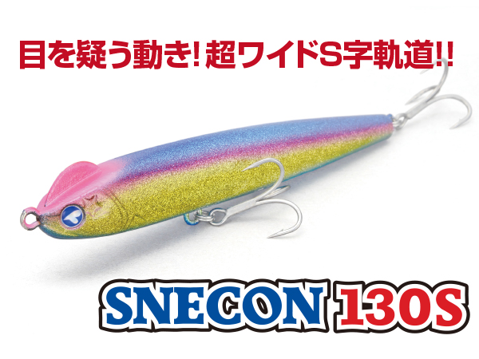
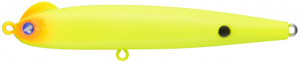
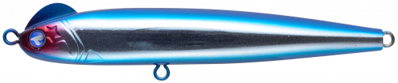
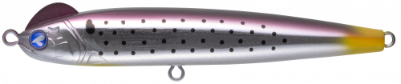
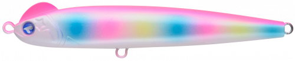
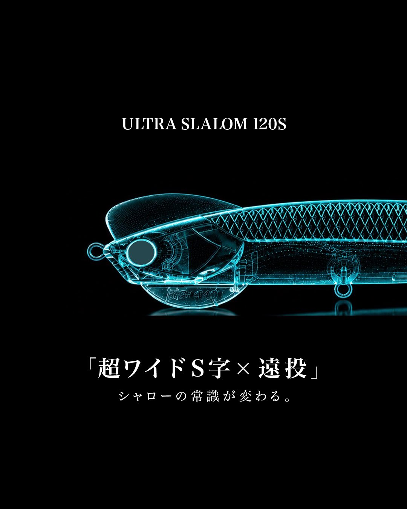
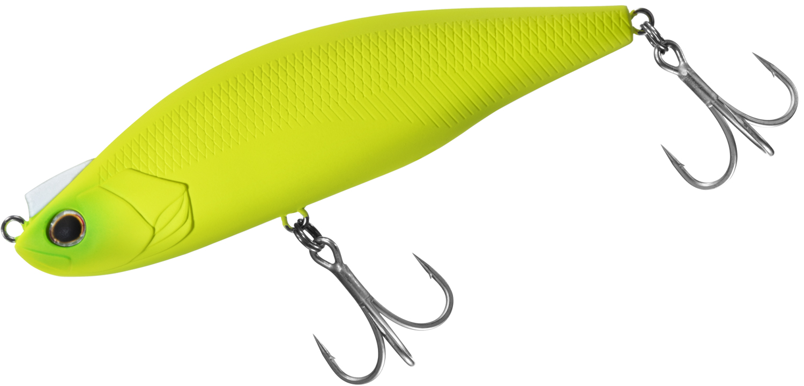

スネコン130S
（SNECON 130S）
スネコン130S（SNECON 130S）はBlueBlue（ブルーブルー）のS字系シンキングペンシルです。
ワンボディながら、頭部のラダー構造と非安定型重心で、リトリーブするだけで約10〜40cm幅の超ワイドS字軌道を描くのが最大の魅力。公式でも「超ワイドS字軌道が流れの中で爆発的に効く！！」とうたわれ、川の流れを横切る小魚のような動きでフィッシュイーターを誘います。

画像出典:ブルーブルー公式HP
スペック
- メーカー
- BlueBlue（ブルーブルー）
- タイプ
- S字系シンキングペンシル
- 全長
- 130mm
- 重さ
- 23g
- フック
- #3×2
- リング
- #3
- レンジ
- 20cm（ロッドを立てると水面下10〜30cm、下げると約50cm）
- ターゲット
- シーバス
- 価格
- 2,948円（税込）
▼今すぐチェック

スネコン130Sの特徴
「目を疑う動き！超ワイドS字軌道！！」流れの中で爆発的に効くS字系シンペン
-
巻くだけで超ワイドなS字軌道
頭部のラダー構造と非安定型重心で、リトリーブするだけで約10〜40cm幅のS字軌道を描く。水の動きの変化が大きいほど、アングラーから遠いほど動きが大きくなる。
-
秩序的に動く「アンバランス系」
ウエイトが左右に動いて決して安定しない構造だが、その動きを無秩序にせず「秩序的に動くように計算し尽くした」と開発の村岡昌憲さん。流れの中では流れの変化が動きを司り、惚れ惚れするようなS字を描く。
-
水面直下の∞ダッチロール
水面直下を艶めかしく泳ぎ、∞（無限）を描くようなダッチロールでランカーを誘う。ロッドを立てれば水面下10〜30cm、下に向ければ50cmほどまでレンジを下げられる。
スネコン130Sの使い方
基本はただ巻き。流れの中なら、ルアーが勝手に良い動きをしてくれます。ロッドを立てて水面下10〜30cm、下に向けて50cmほどと、ロッドの角度でレンジを調整しながら引いてきましょう。
開発者いわく「引くというより、ラインを引いて動力を入力する感覚」。ここ一番の場所で使いこなすには、昼間の透明度が高い場所で、背中がチャートやピンクのカラーの動きを偏光グラスで見ながら覚えるのが第一歩です。
スネコン130Sの得意な状況
河川や河口など、流れのある場所でシーバスを狙う状況が最大の出番。流れの中で細かいS字を描くことが、流れの中で釣れる理由とされています。
アングラーから遠いほど動きが大きくなるので、沖の流れのヨレや潮目を通したい時にも選びたい1本です。
流れの中で超ワイドなS字を描けるので、流れに付いたシーバスがよく釣れるのが強みです。
ワンポイント
公式のオススメカラーは「マットチャート」。動きが見やすいので、まずはこのカラーでS字の動き方を目で見て覚えてから、ナチュラル系のカラーに替えるのがオススメです。
ベイトが小さい時や港湾部では、同じS字系の90S（90mm・15g）に持ち替えると使い分けがしやすくなります。
スネコンシリーズの使い分け
| モデル | 全長／重さ | 得意な場面 |
|---|---|---|
| スネコン90S | 90mm／15g | 港湾・小規模河川。小さめのベイトの時に |
| スネコン130S | 130mm／23g | 河川・河口の流れの中。大きめのベイトや沖のヨレに（本記事のモデル） |
スネコンは90Sと130Sの2サイズ。どちらも巻くだけでワイドなS字を描くので、ベイトのサイズと飛距離で選び分けます。スネコン90Sの記事もあわせてチェックしてみてください。
人気カラー
スネコン130Sは通常23色＋WEB限定カラーを展開。その中から人気カラーを紹介します。

マットチャート公式のオススメカラー。動きが見やすく、濁りや朝夕マズメのアピールにも。

ブルーブルーブランド名を冠したブルー系。澄み潮やイワシ系のベイトの時に。

コノシロ大型ベイトのコノシロをイメージしたナチュラル系。秋のコノシロパターンに。

ピンクキャンディ背中のピンクで動きが見やすいアピール系。ナイトゲームや濁り潮に。
画像出典:ブルーブルー公式HP
スネコン130Sに似ているルアー
-
 スネコン90S
ブルーブルー
詳細はこちら＞
スネコン90S
ブルーブルー
詳細はこちら＞
同じスネコンの90mm・15g。港湾や小さめのベイトの時に、同じS字で食わせたい時に。
-

ウルトラスラローム120S HIGH RAD 詳細はこちら＞高橋優介さんが開発した「超ワイドS字×遠投」のS字系ルアー。沖のシャローでワイドなS字を使いたい時に。
-

モアザン レイジーファシャッド120SS ダイワ 詳細はこちら＞120mm・44gのスローシンキング。大型ベイトパターンで、中層をワイドS字でスローに引きたい時に。